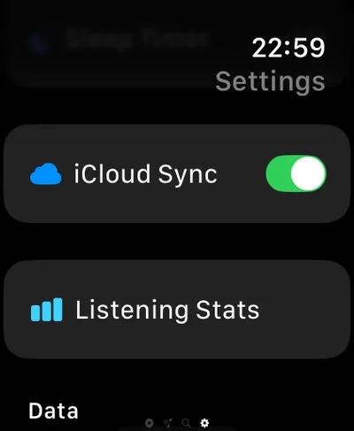

Standalone, not a remote
Most watch radio apps only steer the iPhone. Macdio connects to the station itself, so a run, a swim bag or a quick errand needs nothing but the watch.
Your stations, already there
Favorites and folders arrive through iCloud from your other devices, and saved songs travel back the same way. No account, no login.
Built for a small screen
Digital Crown scrolling, big tap targets, and a Now Playing view designed for a glance rather than a read.



Radio on the wrist, honestly
Can Apple Watch play radio without an iPhone?
Yes. Macdio's watch app streams by itself over Wi-Fi or cellular. The iPhone can be in another room or another city. Read the full guide for what standalone really means.
Do I need headphones?
Yes, Bluetooth headphones or AirPods. watchOS sends streamed audio to Bluetooth devices, not to the watch's built-in speaker.
What about battery?
Streaming over cellular is the heaviest thing a watch radio can do, so expect a faster drain than on Wi-Fi. Wi-Fi plus a lower bitrate station is the economical pairing for a long session.
Does it cost extra?
Ready to tune in?
Get Macdio on the App Store and the watch app installs alongside the iPhone app. No subscription, no ads, no tracking.